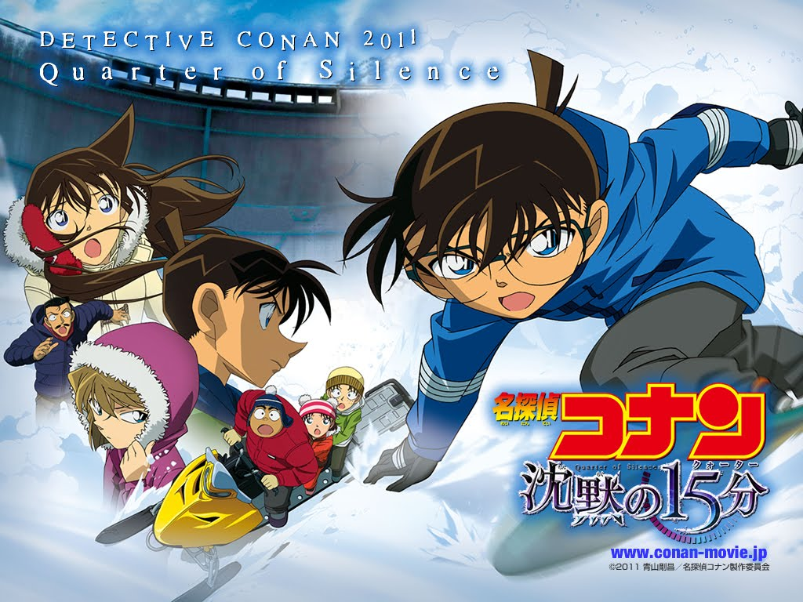

Case Closed

The anime has been running from January 8, 1996 – present, and currently has 975 Episodes
- The Time Bombed Skyscraper
- The Fourteenth Target
- The Last Wizard of the Century
- Captured in Her Eyes
- Countdown to Heaven
- The Phantom of Baker Street
- Crossroad in the Ancient Capital
- Magician of the Silver Sky
- Strategy Above the Depths
- The Private Eyes' Requiem
- Jolly Roger in the Deep Azure
- Full Score of Fear
- The Raven Chaser
- The Lost Ship in the Sky
- Quarter of Silence
- The Eleventh Striker
- Private Eye in the Distant Sea
- Dimensional Sniper
- The Hellfire Sunflowers
- The Darkest Nightmare
- Crimson Love Letter
- Zero the Enforcer
- The Fist of Blue Sapphire
- The Scarlet Bullet
Spin-off films
- Lupin the 3rd vs. Detective Conan: The Movie
- Specials